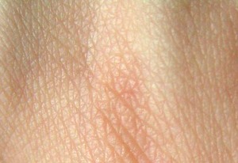

| Home | Reports | ⇐ | ⲥ̅ϥ̅ⲁ̅ | ⇒ | Reset | Dev |

| ⲣⲙⲛϣ. S | man of skin3057 | 582b | |||||||
| ⲥⲁ ⲛϣ. B | skin-seller, skin-dresser3058 | ||||||||
| ⲃⲁⲕϣ. SB | tanner [βυρσευς]3059 | ||||||||
| ⲟⲩⲁⲙϣ. S | (noun feminine)skin-eater, ulcer3060 | ||||||||
| view | ϣⲁⲁⲃ, ϣⲁⲁϥ, ϣⲟⲟⲃ S | (noun masculine) skin [δερμα]1859 |
| view | ⲕⲁⲥ SB ⲕⲉⲉⲥ SA ⲕⲏⲥ, ⲕⲓⲥ S ⲕⲉⲉⲥ, ⲕⲉⲥ SfF plural: ⲕⲁⲁⲥ, ⲕⲁⲉⲥⲉ S plural: ⲕⲉⲉⲥ SA plural: ⲕⲏⲏⲥ F | (noun masculine) bone [οστεον]287 |
| view | ⲙⲟⲩⲧ SB | (noun masculine) sinew, nerve [νευρον]
― joint neck [τραχηλος]288 |
| view | ⲁⲗⲧⲕⲁⲥ S ⲁⲧⲕⲁⲥ B | (noun masculine) marrow [μυελος]289 |
| view | ⲥⲛⲟϥ SBF ⲥⲛⲟⲃ SO ⲥⲛⲁϥ SfALF ⲥⲛⲟⲩϥ Sf plural: ⲥⲛⲱⲱϥ S plural: ⲥⲛⲟⲟϥ A plural: ⲥⲛⲱϥ AB | (noun masculine) blood [αιμα]290 |
| view | ⲁϥ SB ⲁⲁϥ &c, ⲁⲃ SF ⲉϥ A ⲁⲫⲩ, ⲁϥ- S plural: ⲁϥⲟⲩⲓ, ⲁⲃⲟⲩⲓ SBF plural: ⲁⲫⲟⲩⲓ B | (noun masculine) flesh, human or animal [κρεας]542 |
| view | ⲱⲧ SBF ⲟⲩⲱⲧ SA | (noun masculine) fat [στεαρ]
in recipes as fuel1826 |
| view | ⲃⲁⲗⲟⲧ S ⲃⲁⲗⲁⲧ AF | (noun feminine) skin garment
skin bag, containing sleeping mat576 |
| view | ϭⲁⲣ- S | (-) in ⲡⲉⲓϭⲁⲣⲃⲁⲙⲡⲉ prob = ϣⲁⲣ-3368 |
| view | p c ϣⲁⲣ- | (verb) being small, short1957 |